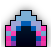
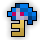
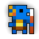

| Last updated: Exalt Version 5.13.0.0 (June 2025) |
|---|
|  |
The Ocean Trench is a high-level dungeon with an underwater theme. The dungeon is a source of Potions of Mana, and is the main source of the untiered Coral Huntress UT Set and all pieces of the Slurp Scion Wizard ST Set.
The most important difficulty factor is that players need oxygen. An oxygen counter gradually goes down until the screen flashes red, which is when players start losing health very quickly (faster than when you stand in magma or lava, almost -100 hp/sec). To refill oxygen, players must stand on top of bubble vents that refill the oxygen counter. If an oxygen source is not found and your hp reaches 0, you die from “Damage Suffocation”.
The portal to Ocean Trench has a chance to drop from Abyssal Squid, Sea Dragon and Ice Giant. It is also guaranteed to drop from Hermit God and Eye of the Storm.
This dungeon must be completed to earn ‘Tunnel Rat‘, ‘Conqueror of the Realm‘, ‘Hero of the Nexus’ and ‘Realm of the Mad God’ fame bonuses.
| The Realm Eye says: |
|---|

Mermaids were long thought to be an extinct race, but they still exist in small numbers at the farthest depths of the ocean. The extreme water pressure in the Ocean Trench kills most wildlife, but mermaids harness it to control the waves above. When the mermaid population was higher, the Ocean Trench was the grave of many sailors lured to their demise by the singing sirens. |
 The Ocean Trench Key is available in the Nexus for 150  .
.
The Ocean Trench Guide is currently slightly outdated.
The dungeon primarily consists of medium to large circular rooms linked by narrow hallways. Air vents will be scattered in each room and will allow players to refill their oxygen. Each room has purple floor tiles and dark purple walls. Decorative coral and seaweed can also be found, although larger, destructible coral obstacles will be located in the hallways.
 Coral Bomb Big |
 Coral Bomb Small |
 Coral Gift |
 Deep Sea Beast |
|  Fishman |
 Fishman Warrior |
 Giant Squid |
 Grey Sea Slurp |
 Ink Bubble |
 Sea Horse |
 Sea Mare |
 Sea Slurp Home |

Thessal is currently the only boss to have a possible chance for extra loot after defeating her. Randomly, Thessal will crumple over the loot bag and ask the adventurers, “Is King Alexander alive?”. If you respond correctly with ”He lives and reigns and conquers the world,” she will thank you and spawn 3 Coral Gifts. If enough time has passed without saying the correct phrase, she will shout “You speak LIES!” and unleash a storm of projectiles before dying and dropping no loot. If you are standing on her when the phrase is not said within a few seconds, you will die.
The Ocean Trench is part of the Mighty Quest pool from the Tinkerer and has two associated quests.
| Name | Description | Items Needed | Reward |
|---|---|---|---|
| The Mermaid Goddess | Defeat Thessal the Mermaid Goddess in the Ocean Trench. |  |
 |
| Ocean Man | With how vast the realm is, you’d think Oryx wouldn’t care for the high seas. |   |
If you are soloing, be cautious around the Sea Mare, since getting caught by the paralyzing bullets it shoots can usually mean death or nexusing, since there is no one safe to teleport to.
There are always 11 rooms between the start room and the boss room, not counting either.
In most Trenches with a medium-large group of people, 2 or 3 players will rush the dungeon while the rest of the group stays at the start. Once the rushers reach Thessal, the group at the start will teleport to the rushers. Previously, If one missed the TP, have not maxed att/dex, or/and played on a low DPS class, it was very difficult to get soulbound damage on Thessal because she would often die in less than five seconds. However, as of Patch 27.7.X12 (Mar 2017), Thessal received HP scaling and the soulbound loot damage threshold was lowered to make it easier for more players to receive loot.
With the addition of the Oceanic Apparel ST robe as a drop from Fishman Warriors, there is now a greater incentive to clear the dungeon instead of simply waiting at the spawn room for rushers to reach the boss.
The Ocean Trench was released in Build 122 (Feb 2012).
Before Patch X.32.4.1 (Jan 2020), the Ocean Trench had no destructible corals in the hallways.
Before Exalt Version 5.11.0.0 (May 2025), dungeon completion gave 34-78 with 60% chance.
Before Exalt Version 5.12.0.0 (June 2025), dungeon completion gave 22-28 and 30-36  .
.
The Dying Thessal sequence is a reference to the "Legend of Thessalonike". The correct phrase used to be a fairly well-guarded secret among elite guilds in the game before becoming widespread knowledge.
Interestingly, the Ocean Trench used to be the only guaranteed drop of a dungeon from an Event Boss for many years. All Event Bosses now drop their associated dungeons at a guaranteed rate.


.png) Coral Gift
Coral Gift


{kind=link}